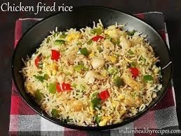
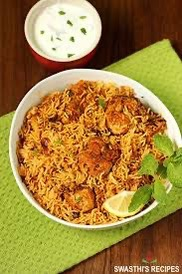

White rice, Frozen vegetables, Garlic, Sesame or wok oil, Chicken breast or thighs, Eggs, Butter (yes, BUTTER!) Gluten free tamari, or traditional soy sauce if you don't need to eat gluten free.
Chicken pieces (bone-in or boneless), Yogurt, Ginger-garlic paste, Red chili powder, Turmeric powder, Garam masala, Lemon juice, Fresh coriander and mint leaves, Salt.
Flour - All-purpose or bread flour is commonly used. Sugar - Granulated sugar for sweetness. Yeast - Active dry or instant yeast for leavening (for yeast doughnuts). Milk - For moisture and richness. Eggs - Adds richness and structure. Butter - For flavor and texture. Salt - Enhances flavor. Nutmeg or cinnamon - Optional spices for added flavor.
Flour: All-purpose flour or bread flour. Water: Warm water to activate the yeast. Yeast: Active dry yeast or instant yeast. Sugar: For activating the yeast and adding a touch of sweetness. Salt: To enhance flavor. Butter: Softened or melted, for richness (optional). Milk: Sometimes used for a softer texture (optional).